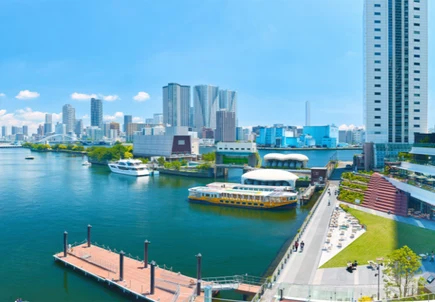
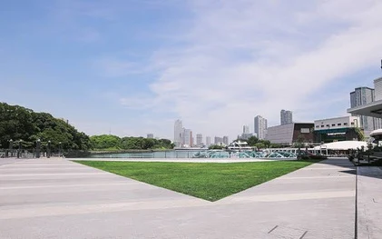
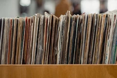
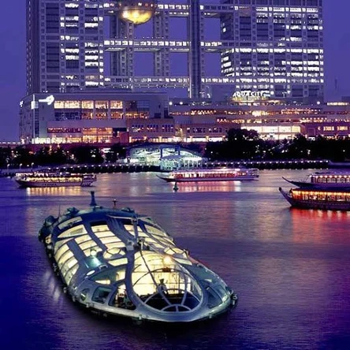

プラザ（芝生広場）
NU MARKET
3月14日の開催可否を確認中レコード、プロダクト、食を中心にしたマーケット。ヴァイナルDJ、リスニング、ライブ、トーク、ワークショップなどで音楽文化に触れます。
TIMELESS / FLOW
時を超え、価値をつなぐ。
レコードに針を落とす。生楽器の響きに耳を澄ませる。水辺で食を楽しむ。竹芝では、世代を超えて受け継がれてきた音楽や食の文化を、いまの表現や聴き方を通じて見つめ直します。
芝生広場ではレコードと食のマーケット、BANK30では生楽器と電子音楽をつなぐライブを企画。東京湾を巡る船上では、移りゆく景色と立体音響を一緒に体験するリスニングやサウンドバスを計画しています。




プラザ（芝生広場）
レコード、プロダクト、食を中心にしたマーケット。ヴァイナルDJ、リスニング、ライブ、トーク、ワークショップなどで音楽文化に触れます。
BANK30
生楽器と電子音楽の境界を横断するライブ。ピアノ、ギター、サックス、ドラムスなどを軸に、国内外のオルタナティブシーンを紹介します。
クルーズ船
東京湾の風景と音楽をつなぐ船上プログラム。ハイレゾ・立体音響のリスニング、アーティストトーク、サウンドバスを企画しています。
SHAKOBA / アトレ竹芝
音楽メディアとのコラボレーションによるカルチャーサロン。DJ、リスニング、トーク、ミニライブと、ジャケットデザインや音楽ZINEなどを紹介します。